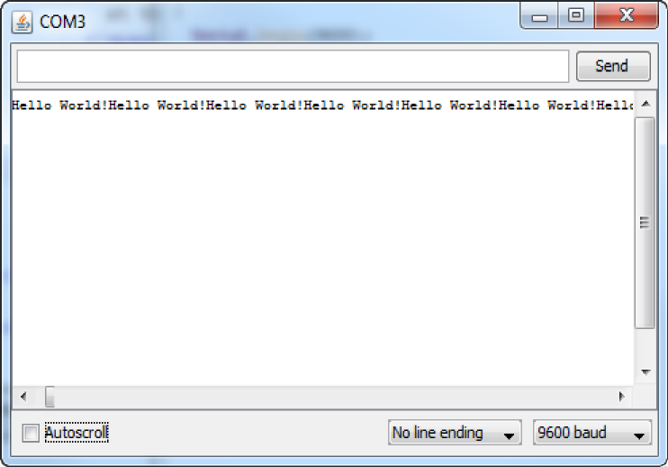
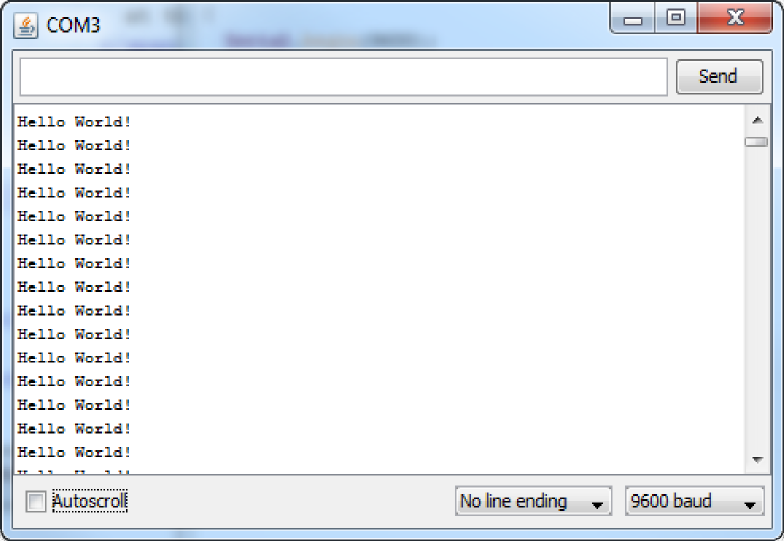

|
Communicating Through the USB
I think an explanation of class methods may be in order here. Serial.begin() is not just a function.
begin() but a method of the instantiated class Serial. This is the first time it is introduced in our tutorials so it might
need some explanation as people may be unfamiliar with the concept.
Also since this is the first introduction to serial communication in chipKIT, it might be necessary to mention that there
are several serial objects, ie Serial, Serial1, Serial2, and Serial3. (Serial is simply tied to USB serial interface).
As well as that the protocol used for these is UART as opposed to SPI, or I2C serial. You probably don’t need to go into
any kind of depth about that just let the reader know that not all serial connections are the same.
Now that the circuit is set up. The next step is to start programming the board
to respond to the button and send a message to the computer. There is a function
that is used to start serial communications to the computer.
That function is Serial.begin(), and this
function has
one input, the baud rate, and the function sets the serial module in the board
to that baud rate. The baud rate is the number of bits per second in the
transmission. It is very important for the baud rate to be the same on both
ends of the communication or errors will occur and cause all sorts of problems. you could probably say something along the
lines of "will cause a failure in communication" as opposed to all sorts of problems, -- just being more specific --
The most common baud rate is 9600. The MPIDE Serial Monitor can only support the following
baud rates: 300, 1200, 2400, 4800, 9600, 14400, 19200, 28800, 38400, 57600, and 115200.
Although, if communicating to something other than the computer, the baud rate can be
something inbetween those numbers, so long as both sides of communication are the same.
Since this function needs only be run once, it should go into the
setup() function.
Now that there is a way to start communications. The next step is on how to send messages.
There are two primary functions that can send a message from the board to the computer. The
first is Serial.print(), which sends whatever it has as
its input, and only
that. The second function is Serial.println(), which
sends whatever it has like Serial.print(), but it
adds a newline to the end of what it sends. Figures
2a and 2b show the results of each statement, when looped.
By putting these functions together, a message is created to look like this:
The LED is now on. It has been 1.2 seconds since the LED changed last.
The LED is now off. It has been 0.5 seconds since the LED changed last.
The section of code to produce that message is:
Serial.print("The LED is now ");
if(LED_state == HIGH){
Serial.print("on. ");
}else{
Serial.print("off. ");
}
Serial.print("It has been ");
Serial.print(seconds);
Serial.println(" seconds since the LED changed last.");
You'll notice that there is a print statement has a variable in it, this is because
Serial.print() only accepts one type of data at a time,
or in other words you can either send text or a variable, but not both at the same time.
You can also tell the Serial.print() how to display the
data it is sending. If the value it is sending is an integer, you can use BYTE, BIN, OCT,
DEC, and HEX; if the value is a floating point number, you can specify the number of decimal
places it will send. See the reference for the specifics on each mode as we are focused on
simply sending the data as is.
|
|

Figure 2a. Looped Serial.print().
|
|

Figure 2b. Looped Serial.println().
|
|